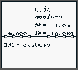

In Pokémon Red, Blue, and Yellow, each monster species has data associated with it, for a total of 190 species. 151 of these are normal Pokémon, like Nidoking or Seel. The other 39 are essentially blank data—placeholders for Pokémon should the developers wish to add more.
In the English versions of the game, these 39 are all named “MISSINGNO.”, an abbreviation for “Missing Number.” This is a translation of the Japanese phrase 欠番 (けつばん). The phrase refers to a Japanese superstition that certain numbers are unlucky due to their association with death.
Missing Number is not a real Pokémon, but more of an “empty” entry in the list of monsters. Most of these entries have no sprite (only displaying garbage on encounter), but three of these placeholders were used by the game designers to display the sprites of the fossils in Pewter Museum and the ghosts in Lavender Pokémon Tower.
Most of these entries have a “blank” cry (where the base, pitch, and length modifiers have been set to zero); this sounds similar to a Nidoran cry because the zeroth base cry is used by Nidoran. Some Missingno. entries have different cries, however.
When forcibly traded to Gold and Silver, each of these is transformed into a regular G/S/C Pokémon. The Johto equivalent of each Missing Number was taken from the end of the Pokédex in order—with the sole exception of Ho‐oh, who was placed between the Missing Numbers representing Heracross and Sneasel. It is doubtful that there is significance to which Missing Number represents each G/S/C Pokémon; the choices appear to not have been made during Red and Green’s development.
Every Missing Number has a Pokédex number of #000, along with a filler Pokédex entry that contains the following information:

This Pokédex entry plays the “blank” cry when “Cry” is selected, but plays Rhydon’s cry when the entry is viewed. The contents of the Pokédex entry remain untranslated in non‐Japanese releases.
| Identifier | Name (English/Japanese) | Sprite | Base Cry | Cry Pitch | Cry Length | G/S/C Equivalent |
|---|---|---|---|---|---|---|
| 31 | MISSINGNO./けつばん | 0 | 0 | 0 | Scizor | |
| 32 | MISSINGNO./けつばん | 0 | 0 | 0 | Shuckle | |
| 50 | MISSINGNO./けつばん | 0 | 0 | 0 | Heracross | |
| 52 | MISSINGNO./けつばん | 0 | 0 | 0 | Ho‐oh | |
| 56 | MISSINGNO./けつばん | 0 | 0 | 0 | Sneasel | |
| 61 | MISSINGNO./けつばん | 0 | 0 | 0 | Teddiursa | |
| 62 | MISSINGNO./けつばん | 0 | 0 | 0 | Ursaring | |
| 63 | MISSINGNO./けつばん | 0 | 0 | 0 | Slugma | |
| 67 | MISSINGNO./けつばん | 0 | 128 | 16 | Magcargo | |
| 68 | MISSINGNO./けつばん | 0 | 0 | 0 | Swinub | |
| 69 | MISSINGNO./けつばん | 29 | 224 | 64 | Piloswine | |
| 79 | MISSINGNO./けつばん | 34 | 255 | 64 | Corsola | |
| 80 | MISSINGNO./けつばん | 0 | 0 | 0 | Remoraid | |
| 81 | MISSINGNO./けつばん | 14 | 224 | 96 | Octillery | |
| 86 | MISSINGNO./けつばん | 0 | 0 | 0 | Delibird | |
| 87 | MISSINGNO./けつばん | 0 | 0 | 0 | Mantine | |
| 94 | MISSINGNO./けつばん | 15 | 64 | 192 | Skarmory | |
| 95 | MISSINGNO./けつばん | 15 | 32 | 192 | Houndour | |
| 115 | MISSINGNO./けつばん | 0 | 0 | 0 | Houndoom | |
| 121 | MISSINGNO./けつばん | 0 | 0 | 0 | Kingdra | |
| 122 | MISSINGNO./けつばん | 0 | 0 | 0 | Phanpy | |
| 127 | MISSINGNO./けつばん | 17 | 32 | 16 | Donphan | |
| 134 | MISSINGNO./けつばん | 0 | 0 | 0 | Porygon2 | |
| 135 | MISSINGNO./けつばん | 0 | 0 | 0 | Stantler | |
| 137 | MISSINGNO./けつばん | 15 | 64 | 128 | Smeargle | |
| 140 | MISSINGNO./けつばん | 0 | 0 | 0 | Tyrogue | |
| 146 | MISSINGNO./けつばん | 0 | 0 | 0 | Hitmontop | |
| 156 | MISSINGNO./けつばん | 0 | 0 | 0 | Smoochum | |
| 159 | MISSINGNO./けつばん | 0 | 0 | 0 | Elekid | |
| 160 | MISSINGNO./けつばん | 0 | 0 | 0 | Magby | |
| 161 | MISSINGNO./けつばん | 0 | 0 | 0 | Miltank | |
| 162 | MISSINGNO./けつばん | 0 | 0 | 0 | Blissey | |
| 172 | MISSINGNO./けつばん | 0 | 0 | 0 | Raikou | |
| 174 | MISSINGNO./けつばん | 0 | 0 | 0 | Entei | |
| 175 | MISSINGNO./けつばん | 0 | 0 | 0 | Suicune | |
| 181 | MISSINGNO./けつばん | 29 | 0 | 128 | Larvitar | |
| 182 | MISSINGNO./けつばん | Kabutops fossil | 0 | 0 | 0 | Pupitar |
| 183 | MISSINGNO./けつばん | Aerodactyl fossil | 0 | 0 | 0 | Tyranitar |
| 184 | MISSINGNO./ゆうれい | Ghost | 0 | 0 | 0 | Lugia |
In Pokémon Diamond and Pearl are files named “ketsuban.” These are overworld sprites that spell out the phrase in Japanese. Their significance is unknown.
©2010–2011 IIMarckus. Released under a Creative Commons Attribution license.